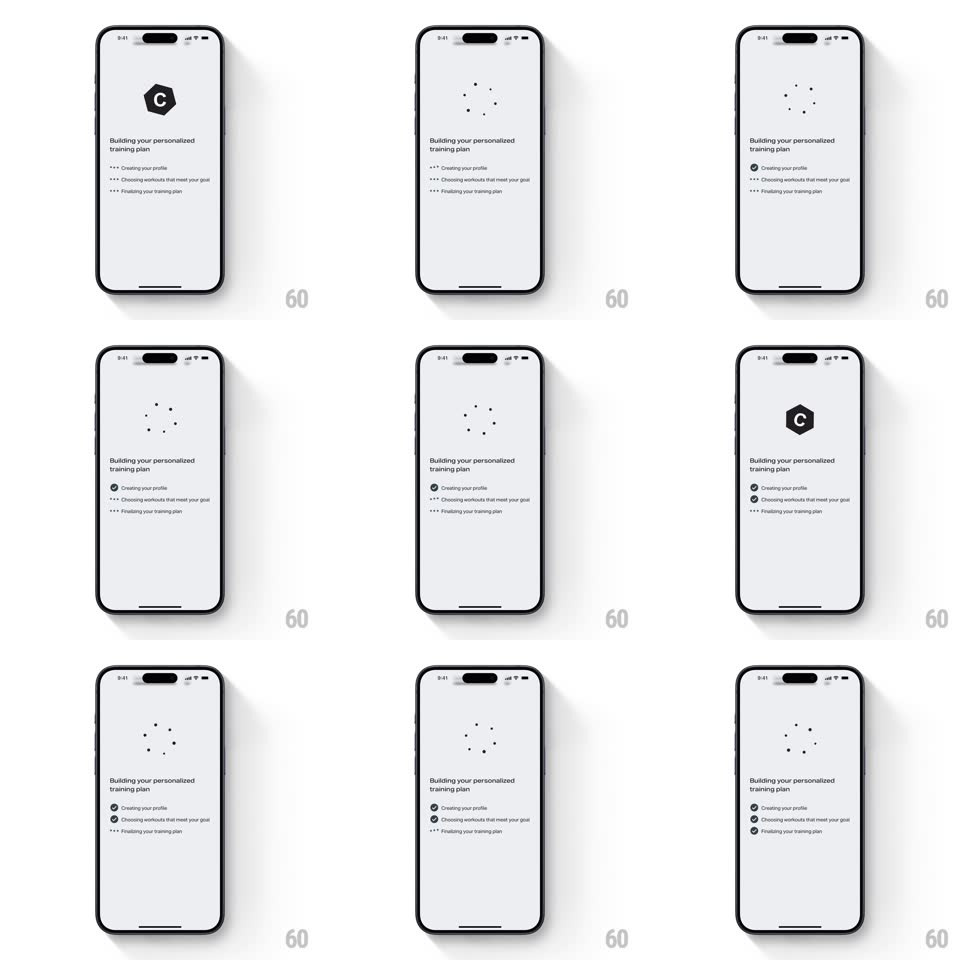

Media
Frame-by-frame

Rebuild this interaction 1:1: Freeletics' coach setup loader - the C hexagon logo dissolves into a ring of spinning dots while "Building your personalized training plan" checks off three steps, each flipping from loading dots to a checkmark.

Rebuild this interaction 1:1: Freeletics' coach setup loader - the C hexagon logo dissolves into a ring of spinning dots while "Building your personalized training plan" checks off three steps, each flipping from loading dots to a checkmark.
## Integration
Integration: stack-agnostic spec - springs given as stiffness/damping, timed motions as duration + curve; map every value to your framework and animation library of choice.
## Scene
White screen: a black hexagon "C" logo up top that morphs into a ring of 8 small dots, then the headline "Building your personalized training plan", then a left-aligned checklist: "Creating your profile", "Choosing workouts that meet your goal", "Finalizing your training plan".
## Motion spec
Pattern: logo-to-loader morph with sequential checklist.
- The hexagon logo scales down slightly and dissolves (250ms) as the 8-dot ring fades in and begins rotating (one revolution per ~1.2s, dots scaling with position for depth).
- Checklist rows appear staggered 150ms apart, each starting with a trailing dot animation ("...") cycling at 800ms.
- Steps complete top to bottom, ~1.5s apart: the trailing dots freeze and a filled check circle pops in at the row's left (scale 0.4 -> 1.15 -> 1, spring ~380/16), the row's text firming from 60% to 100% opacity.
- When the last check lands, the dot ring slows and morphs back into the hexagon logo (350ms) - setup complete.
## Calibration
- Strictly sequential: a step never checks while an earlier one is pending.
- The ring rotation never stops mid-morph - the logo swap happens on the fly.
## Reduced motion
Logo crossfades; steps check without pop overshoot.
## Don't miss
- The check pop is the only spring on screen - small but audible-feeling.
- Row text dims while pending; the checklist reads as a queue, not a list.